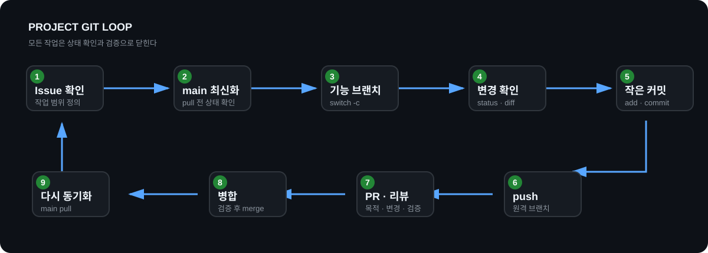
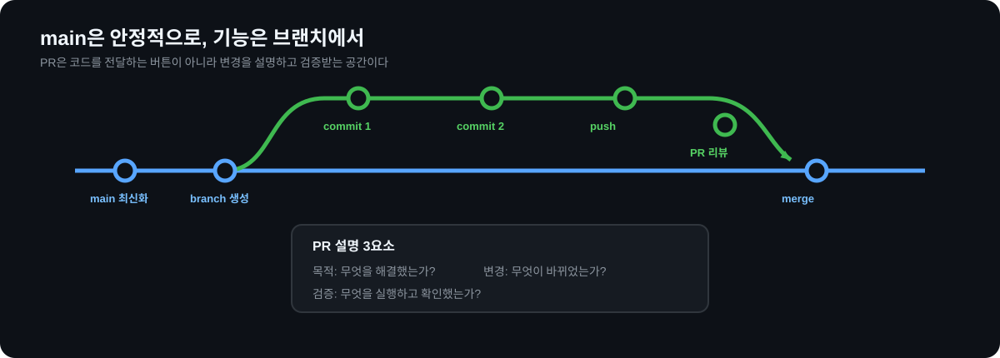
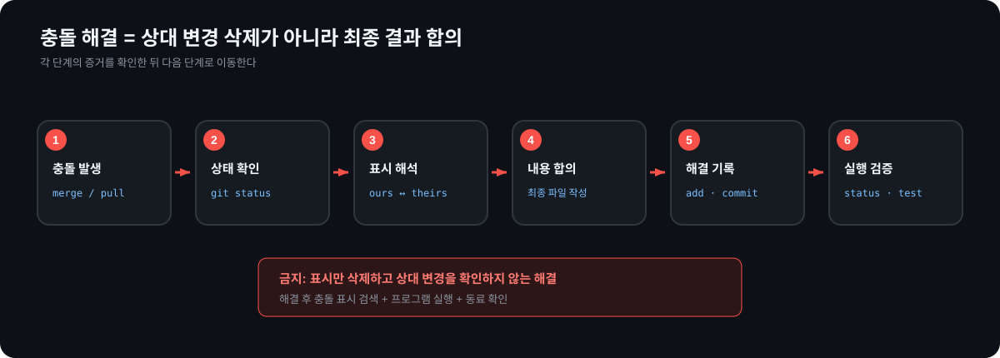

명령 암기보다
상태를 보고 판단하는 Git
하나의 team-profile 저장소를 4시간 동안 발전시킵니다. 매 단계에서 결과를 먼저 예측하고, 실행 결과를 관찰하고, 실패를 복구하고, Git 증거로 완료를 확인합니다.
프로젝트의 기본 작업 루프
프로젝트 중에는 이 순서를 반복합니다. 시작 위치와 변경 범위를 확인하지 않은 채 명령부터 입력하지 않습니다.

설명 확인
“지금 어느 브랜치인가?”, “어떤 변경이 커밋되는가?”, “원격과 무엇이 다른가?”를 각각 어떤 명령으로 확인할지 말합니다.
1시간차 — 상태를 보고 작은 커밋 만들기
파일 3개를 만들되 필요한 변경만 골라 두 번 커밋합니다. 복사하기 전에 각 명령 뒤의 상태를 먼저 예상합니다.

미션
team-profile생성 및git init- README, Java 파일,
.env생성 .env를.gitignore로 제외- README와 Java 변경을 서로 다른 커밋으로 기록
제출 증거
git status --shortgit diff와git diff --stagedgit log --oneline -3.env가 추적되지 않는 이유 설명
git status --short git diff git add README.md git diff --staged git commit -m "docs: add team introduction" git log --oneline --decorate -3
2시간차 — 기능 브랜치에서 작업하기
main에서 직접 기능을 만들지 않습니다. 최신 main에서 기능 브랜치를 만들고, 변경 위치와 커밋 그래프를 확인합니다.

미션
git switch -c feature/student-profile- 자기 소개와 Java 출력 추가
- 변경 범위를 확인하고 두 번 커밋
- 그래프에서 main과 feature 위치 비교
제출 증거
- 현재 브랜치명
- 기능 브랜치의 커밋 2개
git log --graph결과- main에서 직접 작업하지 않는 이유
git switch main git switch -c feature/student-profile git status git add members/이름.md git commit -m "feat: add student profile" git log --oneline --graph --decorate --all
3시간차 — 원격 저장소와 Pull Request
기능 브랜치를 GitHub에 올리고 동료의 리뷰를 받아 새 커밋으로 반영합니다. Windows의 HTTPS 인증은 Git Credential Manager 브라우저 로그인을 우선 사용합니다.
미션
- 원격 저장소 연결
- 기능 브랜치 push
- 목적·변경·검증을 적은 PR 생성
- 동료가 한 줄 리뷰 작성
- 리뷰 반영 커밋 추가
제출 증거
git remote -v- PR URL
- 동료 리뷰
- 리뷰 반영 커밋 해시
- 로컬 브랜치와
origin/브랜치차이 설명
git remote -v git push -u origin feature/student-profile git fetch origin git branch -vv
PR 설명 템플릿
목적: 무엇을 해결했는가?
변경: 어떤 파일과 동작이 바뀌었는가?
검증: 무엇을 실행하고 확인했는가?
4시간차 — 충돌을 합의하고 안전하게 복구하기
두 학생이 같은 줄을 다르게 수정해 실제 충돌을 만듭니다. 표시를 지우는 것이 아니라 최종 내용에 합의하고 실행 결과까지 검증합니다.

미션
- 두 브랜치에서 README 같은 줄 수정
- merge하여 충돌 발생
git status로 충돌 파일 확인- 두 변경을 비교하고 최종 내용 합의
- add, commit 후 프로그램 실행
제출 증거
- 충돌 오류 메시지
- 충돌 표시가 있는 파일
- 합의한 최종 내용
- 해결 커밋
- 실행 또는 출력 검증 결과
git status # 충돌 표시를 읽고 최종 내용 결정 git add README.md git commit -m "merge: resolve team introduction conflict" git status
멈추고 확인할 명령
git reset --hard, git clean -fd, git push --force는 변경 또는 팀 이력을 잃게 할 수 있습니다. 실행 전에 사라지는 데이터, 백업 여부, 팀 저장소 영향부터 확인합니다.
프로젝트 장애 대응표
| 증상 | 먼저 확인 | 안전한 첫 대응 | 완료 확인 |
|---|---|---|---|
| 잘못된 파일 stage | status, diff --staged | git restore --staged 파일 | 파일은 남고 stage만 해제 |
| 커밋 전 변경 취소 | git diff | 정말 버릴 변경인지 확인 후 git restore 파일 | diff가 비어 있음 |
| push 거절 | fetch, log --graph --all | 원격 변경 확인 후 팀 규칙에 따라 pull/merge | 테스트 후 push 성공 |
| merge conflict | git status | 표시 해석 → 합의 → add → commit | 표시 없음, 실행 성공 |
| 공유 커밋 취소 | git log | git revert 커밋 | 역방향 변경 새 커밋 |
| 잘못된 브랜치 작업 | branch --show-current, status | 변경을 잃지 말고 새 브랜치 생성 또는 상태 공유 | 올바른 브랜치에 변경 |
팀 Git 규칙
항상 지킨다
- 작업 전 main 최신화
- Issue·기능 단위 브랜치
- 작고 설명 가능한 커밋
- PR에 목적·변경·검증 기록
- 충돌 해결 후 실행 검증
혼자 결정하지 않는다
- main 직접 push
- force push
- 공유 브랜치 reset
- 충돌 상대 변경 삭제
.env와 비밀정보 commit
완료 기준
| 단계 | PASS 증거 |
|---|---|
| 4시간 직후 | 기능 브랜치, 의미 있는 커밋 2개, PR, 동료 리뷰, 충돌 해결, stage 복구, 상태 설명 |
| 반복 3회 후 | 안내 없이 기본 루프 수행, push 거절 또는 충돌 해결, 리뷰 반영, 근거 있는 도움 요청 |
| 프로젝트 진입 전 | Issue부터 병합까지 독립 수행, 비밀정보 제외, 안전한 복구, 실행 검증, Git 이력 설명 |
공식 참고 자료
기술 설명은 2026-09-02에 공식 문서로 확인했습니다.